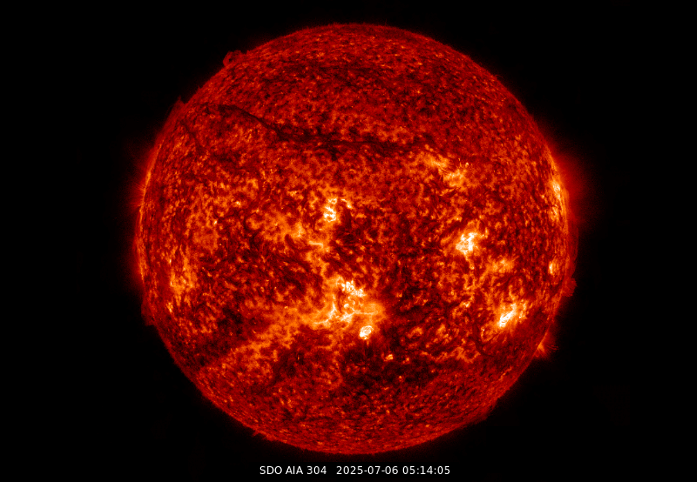
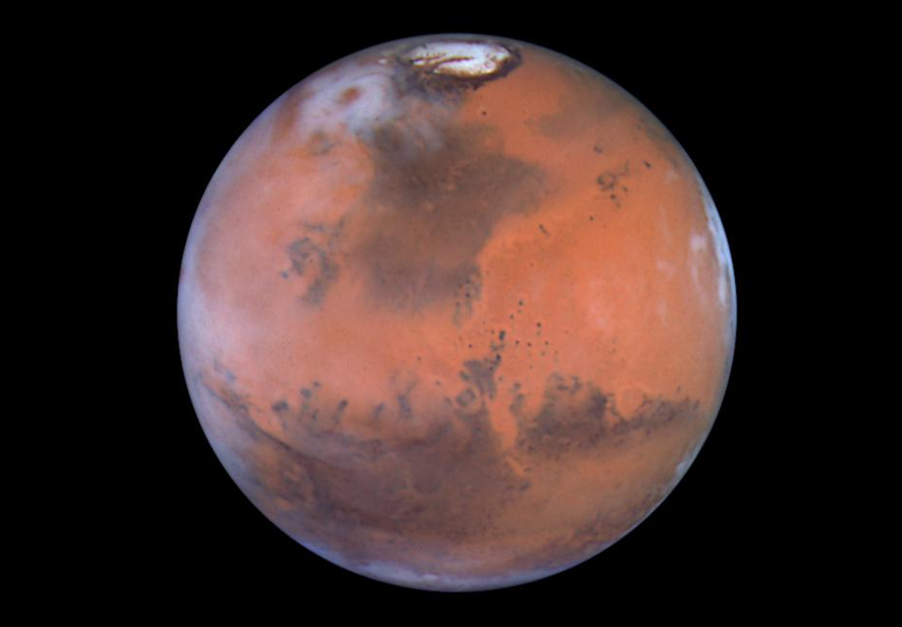

Heliophysics
My work in heliophysics spans from understanding fundamental plasma processes in the solar wind to solar eruptive events, such as solar flares or Coronal Mass Ejections (CMEs). I have extensively worked on Parker Solar Probe (PSP) measurements, and have contributed to the calibration of the Solar Probe ANalyzer-Electron (SPAN-E) instrument and other datasets. With the advent of PSP, we are able to observe the solar wind across the inner heliosphere, from as close as 0.046 AU to well beyond.
Planetary
I am primarily interested in studying the Martian environment, from crustal magnetism below the planetary surface to plasma waves upstream of the Martian bow shock. I also maintain a broad interest in planetary science, with experience ranging from terrestrial seismology to plasma conditions in the upper atmosphere of Venus. For most of my studies, I apply a range of statistical and data analysis techniques to interpret observations from various planetary missions.
Geospace

My research in geospace mainly focuses on data-driven and machine learning forecasting of various space environments near Earth. For example, using observations of spacecraft near L1, we can try to predict the resulting space weather conditions near Earth through proxies, such as Dst index, to study how solar wind variability shapes geospace. Understanding these processes helps us improve space weather forecasts, which is increasingly important for satellites, communications, and future human exploration.